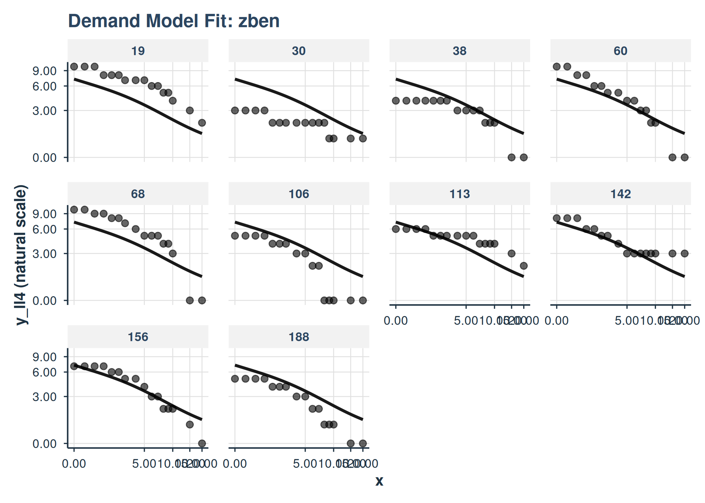
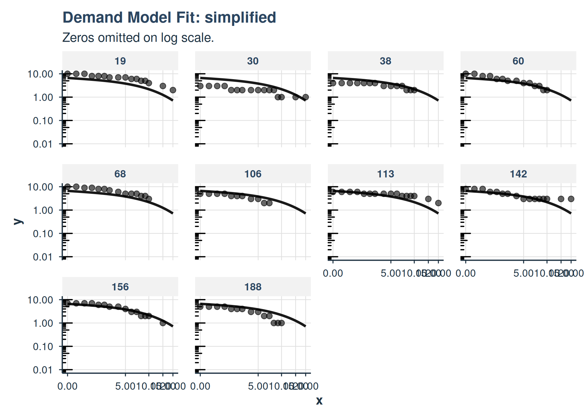
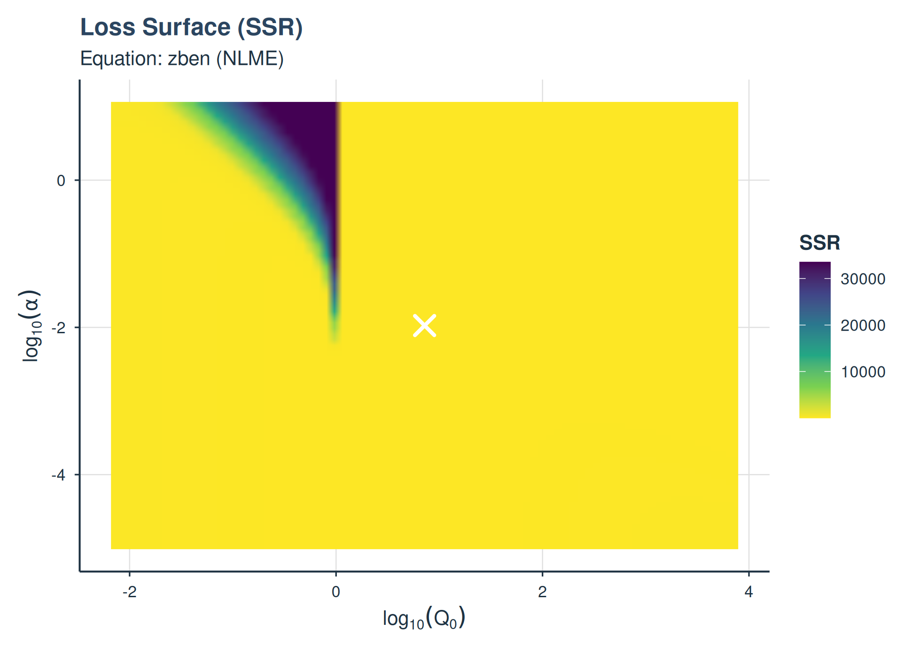
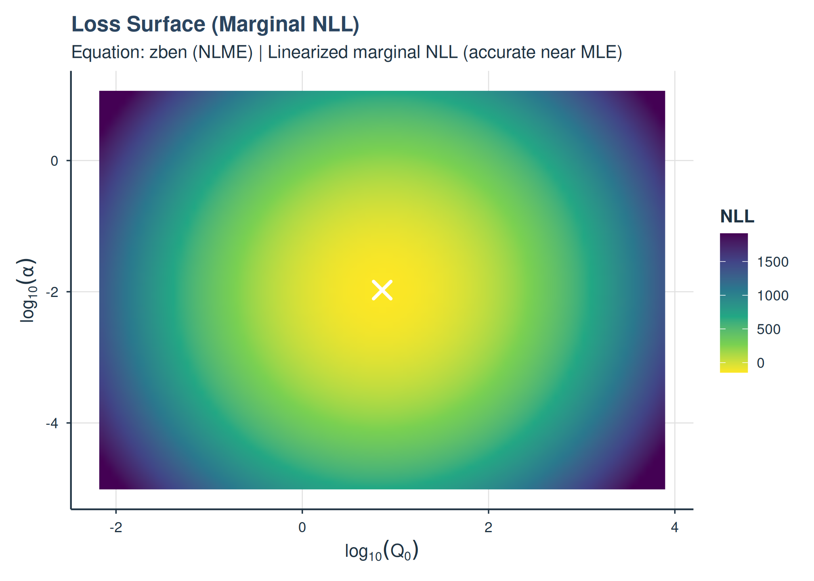
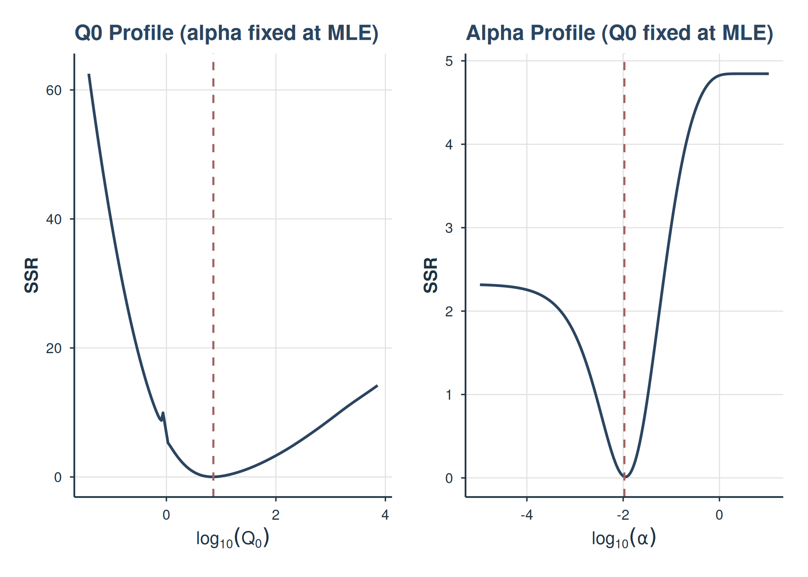
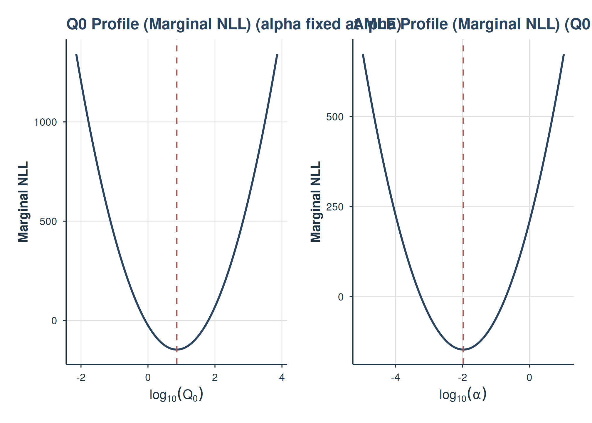
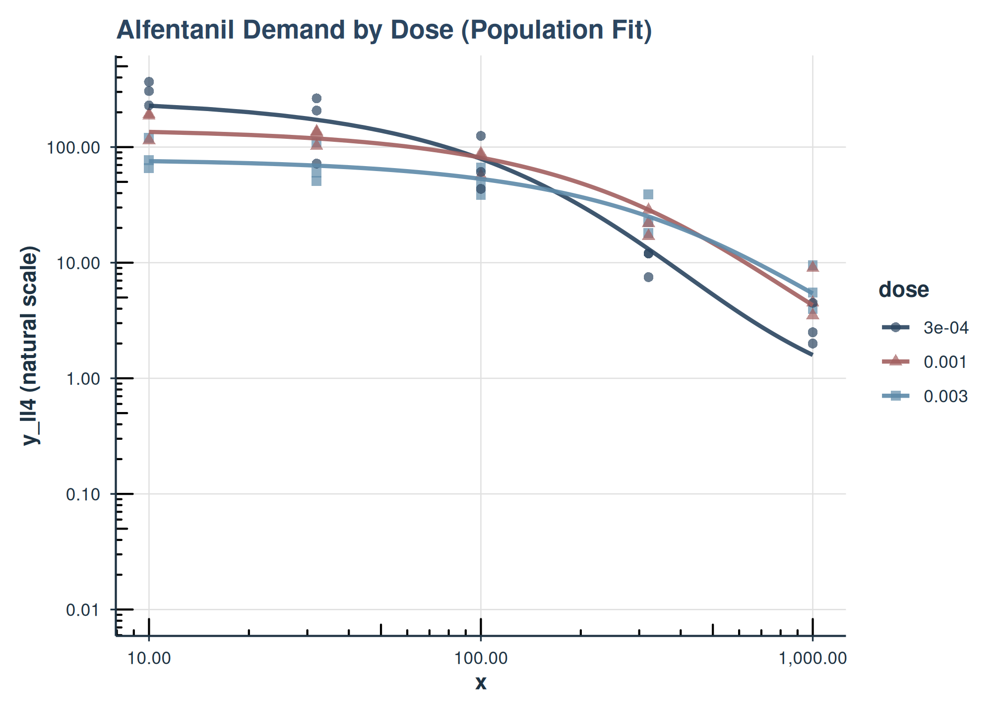
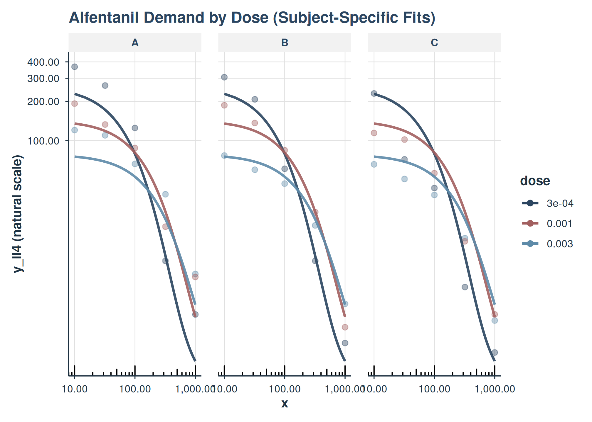
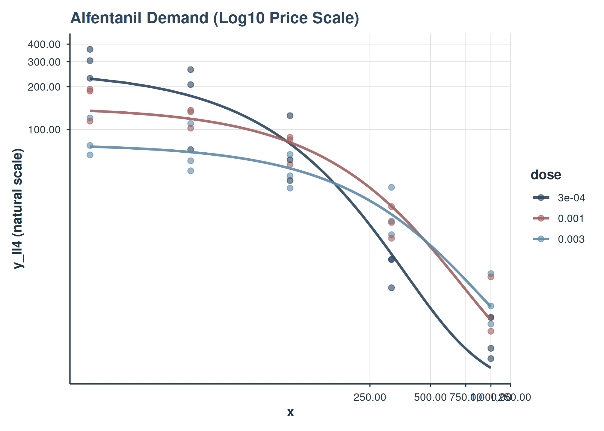

Mixed-Effects Demand Modeling with `beezdemand`
Brent Kaplan
2026-04-21
Source:vignettes/mixed-demand.Rmd
mixed-demand.RmdIntroduction
This vignette demonstrates how to perform mixed-effects nonlinear
modeling of behavioral economic demand data using the beezdemand
package. We will focus on the fit_demand_mixed() function
and its associated helper functions for extracting results, making
predictions, and visualizing fits. These models allow for individual
differences (random effects) and the examination of how various factors
(fixed effects) influence demand parameters like Q_{0} (maximum consumption at zero price) and
\alpha (sensitivity of demand to
price). The parameters Q_{0} and \alpha are estimated on a log10 scale for
numerical stability, but reporting functions will provide them on their
natural, interpretable scale.
For advanced topics including multi-factor models, collapsing factor
levels, estimated marginal means, pairwise comparisons, continuous
covariates, and complex random effects structures, see
vignette("mixed-demand-advanced").
Data Preparation
For these examples, we will use the apt and ko datasets, which is assumed to be available and pre-processed.
The apt dataset should contain:
id: A unique identifier for each subject.
x: The price of the drug.
y: The consumption of the drug.
The ko dataset should contain:
monkey: A subject or group identifier for random effects.
x: The price of the commodity (in this case the fixed-ratio requirement).
y: Raw consumption values. This is typically used with the simplified exponentiated equation.
y_ll4: Consumption, ll4 transformed. This is typically used with the zben equation.
Factor columns like drug and dose.
quick_nlme_control <- nlme::nlmeControl(
msMaxIter = 100,
niterEM = 20,
maxIter = 100, # Low iterations for speed
pnlsTol = 0.1,
tolerance = 1e-4, # Looser tolerance
opt = "nlminb",
msVerbose = FALSE
)Fitting Demand Models with fit_demand_mixed()
The core function for fitting nonlinear mixed-effects demand models
is fit_demand_mixed().
APT Fit and Plot
LL4 transformation with ZBEn
apt_ll4 <- apt |>
mutate(y_ll4 = ll4(y))
fit_apt_zben <- fit_demand_mixed(
data = apt_ll4,
y_var = "y_ll4",
x_var = "x",
id_var = "id",
equation_form = "zben",
nlme_control = quick_nlme_control,
start_value_method = "heuristic"
)
print(fit_apt_zben)
#> Demand NLME Model Fit ('beezdemand_nlme' object)
#> ---------------------------------------------------
#>
#> Call:
#> fit_demand_mixed(data = apt_ll4, y_var = "y_ll4", x_var = "x",
#> id_var = "id", equation_form = "zben", start_value_method = "heuristic",
#> nlme_control = quick_nlme_control)
#>
#> Equation Form Selected: zben
#> NLME Model Formula:
#> y_ll4 ~ Q0 * exp(-(10^alpha/Q0) * (10^Q0) * x)
#> <environment: 0x55d6e16f0580>
#> Fixed Effects Structure (Q0 & alpha): ~ 1
#> Factors: None
#> ID Variable for Random Effects: id
#>
#> Start Values Used (Fixed Effects Intercepts):
#> Q0 Intercept (log10 scale): 0.8117
#> alpha Intercept (log10 scale): -3
#>
#> --- NLME Model Fit Summary (from nlme object) ---
#> Nonlinear mixed-effects model fit by maximum likelihood
#> Model: nlme_model_formula_obj
#> Data: data
#> Log-likelihood: 146.7928
#> Fixed: list(Q0 ~ 1, alpha ~ 1)
#> Q0 alpha
#> 0.8578019 -1.9749801
#>
#> Random effects:
#> Formula: list(Q0 ~ 1, alpha ~ 1)
#> Level: id
#> Structure: Diagonal
#> Q0 alpha Residual
#> StdDev: 0.1691518 0.2287771 0.07914016
#>
#> Number of Observations: 160
#> Number of Groups: 10
#>
#> --- Additional Fit Statistics ---
#> Log-likelihood: 146.8
#> AIC: -283.6
#> BIC: -268.2
#> ---------------------------------------------------
plot(
fit_apt_zben,
inv_fun = ll4_inv,
y_trans = "pseudo_log",
x_trans = "pseudo_log",
show_pred_lines = c("population", "individual")
) +
facet_wrap(
~id
)
Simplified Exponential
fit_apt_simplified <- fit_demand_mixed(
data = apt_ll4,
y_var = "y",
x_var = "x",
id_var = "id",
equation_form = "simplified",
nlme_control = quick_nlme_control,
start_value_method = "heuristic"
)
print(fit_apt_simplified)
#> Demand NLME Model Fit ('beezdemand_nlme' object)
#> ---------------------------------------------------
#>
#> Call:
#> fit_demand_mixed(data = apt_ll4, y_var = "y", x_var = "x", id_var = "id",
#> equation_form = "simplified", start_value_method = "heuristic",
#> nlme_control = quick_nlme_control)
#>
#> Equation Form Selected: simplified
#> NLME Model Formula:
#> y ~ (10^Q0) * exp(-(10^alpha) * (10^Q0) * x)
#> <environment: 0x55d6f1f95ec0>
#> Fixed Effects Structure (Q0 & alpha): ~ 1
#> Factors: None
#> ID Variable for Random Effects: id
#>
#> Start Values Used (Fixed Effects Intercepts):
#> Q0 Intercept (log10 scale): 0.8129
#> alpha Intercept (log10 scale): -3
#>
#> --- NLME Model Fit Summary (from nlme object) ---
#> Nonlinear mixed-effects model fit by maximum likelihood
#> Model: nlme_model_formula_obj
#> Data: data
#> Log-likelihood: -172.7978
#> Fixed: list(Q0 ~ 1, alpha ~ 1)
#> Q0 alpha
#> 0.8218145 -1.7748511
#>
#> Random effects:
#> Formula: list(Q0 ~ 1, alpha ~ 1)
#> Level: id
#> Structure: Diagonal
#> Q0 alpha Residual
#> StdDev: 0.1626688 0.1969346 0.5590275
#>
#> Number of Observations: 160
#> Number of Groups: 10
#>
#> --- Additional Fit Statistics ---
#> Log-likelihood: -172.8
#> AIC: 355.6
#> BIC: 371
#> ---------------------------------------------------
plot(
fit_apt_simplified,
x_trans = "pseudo_log",
show_pred_lines = c("population", "individual")
) +
facet_wrap(
~id
)
Koffarnus (Exponentiated) Equation Form
fit_demand_mixed() also supports the Koffarnus et
al. (2015) equation via equation_form = "exponentiated". By
default, the scaling constant k will be computed from the
data range (you can also specify it directly).
fit_apt_exponentiated <- fit_demand_mixed(
data = apt,
y_var = "y",
x_var = "x",
id_var = "id",
equation_form = "exponentiated",
k = NULL,
nlme_control = quick_nlme_control,
start_value_method = "heuristic"
)
print(fit_apt_exponentiated)
#> Demand NLME Model Fit ('beezdemand_nlme' object)
#> ---------------------------------------------------
#>
#> Call:
#> fit_demand_mixed(data = apt, y_var = "y", x_var = "x", id_var = "id",
#> equation_form = "exponentiated", k = NULL, start_value_method = "heuristic",
#> nlme_control = quick_nlme_control)
#>
#> Equation Form Selected: exponentiated
#> NLME Model Formula:
#> y ~ (10^Q0) * 10^(1.5 * (exp(-(10^alpha) * (10^Q0) * x) - 1))
#> <environment: 0x55d6ef29a860>
#> Fixed Effects Structure (Q0 & alpha): ~ 1
#> Factors: None
#> ID Variable for Random Effects: id
#>
#> Start Values Used (Fixed Effects Intercepts):
#> Q0 Intercept (log10 scale): 0.8129
#> alpha Intercept (log10 scale): -3
#>
#> --- NLME Model Fit Summary (from nlme object) ---
#> Nonlinear mixed-effects model fit by maximum likelihood
#> Model: nlme_model_formula_obj
#> Data: data
#> Log-likelihood: -181.3817
#> Fixed: list(Q0 ~ 1, alpha ~ 1)
#> Q0 alpha
#> 0.8334103 -2.2391878
#>
#> Random effects:
#> Formula: list(Q0 ~ 1, alpha ~ 1)
#> Level: id
#> Structure: Diagonal
#> Q0 alpha Residual
#> StdDev: 0.1648661 0.2001946 0.5988898
#>
#> Number of Observations: 160
#> Number of Groups: 10
#>
#> --- Additional Fit Statistics ---
#> Log-likelihood: -181.4
#> AIC: 372.8
#> BIC: 388.1
#> ---------------------------------------------------Inspecting Fits (tidy / glance / augment)
All modern model classes support tidy(),
glance(), and augment() to standardize
programmatic access to estimates, model summaries, and residuals.
glance(fit_apt_zben)
#> # A tibble: 1 × 10
#> model_class backend equation_form nobs n_subjects converged logLik AIC
#> <chr> <chr> <chr> <int> <int> <lgl> <dbl> <dbl>
#> 1 beezdemand_nlme nlme zben 160 10 TRUE 147. -284.
#> # ℹ 2 more variables: BIC <dbl>, sigma <dbl>
tidy(fit_apt_zben) |> head()
#> # A tibble: 5 × 9
#> term estimate std.error statistic p.value component estimate_scale
#> <chr> <dbl> <dbl> <dbl> <dbl> <chr> <chr>
#> 1 Q0 7.21 0.919 7.85 4.29e-15 fixed natural
#> 2 alpha 0.0106 0.00182 5.83 5.69e- 9 fixed natural
#> 3 Q0 0.0286 NA NA NA variance natural
#> 4 alpha 0.0523 NA NA NA variance natural
#> 5 Residual 0.00626 NA NA NA variance natural
#> # ℹ 2 more variables: term_display <chr>, estimate_internal <dbl>
augment(fit_apt_zben) |> head()
#> # A tibble: 6 × 7
#> id x y y_ll4 .fitted .resid .fixed
#> <fct> <dbl> <dbl> <dbl> <dbl> <dbl> <dbl>
#> 1 19 0 10 1.00 1.02 -0.0195 0.858
#> 2 19 0.5 10 1.00 0.994 0.00585 0.820
#> 3 19 1 10 1.00 0.969 0.0305 0.785
#> 4 19 1.5 8 0.903 0.945 -0.0423 0.751
#> 5 19 2 8 0.903 0.922 -0.0188 0.718
#> 6 19 2.5 8 0.903 0.899 0.00413 0.687Diagnostics
Use check_demand_model() and the residual plotting
helpers as standard post-fit checks.
check_demand_model(fit_apt_zben)
#>
#> Model Diagnostics
#> ==================================================
#> Model class: beezdemand_nlme
#>
#> Convergence:
#> Status: Converged
#>
#> Random Effects:
#> Q0 variance: 0.02861
#> alpha variance: 0.05234
#>
#> Residuals:
#> Mean: -0.06639
#> SD: 0.9396
#> Range: [-3.621, 2.686]
#> Outliers: 1 observations
#>
#> --------------------------------------------------
#> Issues Detected (1):
#> 1. Detected 1 potential outliers (|resid| > 3 SD)
#>
#> Recommendations:
#> - Investigate outlying observations
plot_residuals(fit_apt_zben)$fitted
#> NULLLoss Surface and Profile
The loss surface and profile plots visualize the optimization landscape. The NLME versions support two modes:
-
type = "ssr"(default): sum-of-squared residuals on aggregated price-level means — a quick visual check of the fixed-effects landscape -
type = "marginal": linearized marginal negative log-likelihood that integrates over random-effects variance — more statistically appropriate for mixed models and preferred for assessing identifiability near the MLE
plot_loss_surface(fit_apt_zben)
SSR loss surface on aggregated means.
plot_loss_surface(fit_apt_zben, type = "marginal")
Marginal NLL surface accounting for random-effects variance.
Profile plots show 1D slices (one parameter varied, the other fixed at the MLE):
plot_loss_profile(fit_apt_zben)
SSR profile plots for Q0 and alpha.
plot_loss_profile(fit_apt_zben, type = "marginal")
Marginal NLL profile plots for Q0 and alpha.
Basic Model (No Factors)
This model estimates global Q_{0} and \alpha parameters with random effects for subjects.
# Make sure a similar 'fit_no_factors' was created successfully in your environment
# For the vignette, let's create one that is more likely to converge quickly
# by using only Alfentanil data, which is less complex than the full dataset.
ko_alf <- ko[ko$drug == "Alfentanil", ]
fit_no_factors_vignette <- fit_demand_mixed(
data = ko_alf,
y_var = "y_ll4",
x_var = "x",
id_var = "monkey",
equation_form = "zben",
nlme_control = quick_nlme_control, # Use quicker control for vignette
start_value_method = "heuristic" # Heuristic is faster for simple model
)
print(fit_no_factors_vignette)
#> Demand NLME Model Fit ('beezdemand_nlme' object)
#> ---------------------------------------------------
#>
#> Call:
#> fit_demand_mixed(data = ko_alf, y_var = "y_ll4", x_var = "x",
#> id_var = "monkey", equation_form = "zben", start_value_method = "heuristic",
#> nlme_control = quick_nlme_control)
#>
#> Equation Form Selected: zben
#> NLME Model Formula:
#> y_ll4 ~ Q0 * exp(-(10^alpha/Q0) * (10^Q0) * x)
#> <environment: 0x55d6ebbddff0>
#> Fixed Effects Structure (Q0 & alpha): ~ 1
#> Factors: None
#> ID Variable for Random Effects: monkey
#>
#> Start Values Used (Fixed Effects Intercepts):
#> Q0 Intercept (log10 scale): 2.271
#> alpha Intercept (log10 scale): -3
#>
#> --- NLME Model Fit Summary (from nlme object) ---
#> Nonlinear mixed-effects model fit by maximum likelihood
#> Model: nlme_model_formula_obj
#> Data: data
#> Log-likelihood: 2.763668
#> Fixed: list(Q0 ~ 1, alpha ~ 1)
#> Q0 alpha
#> 2.131113 -4.665222
#>
#> Random effects:
#> Formula: list(Q0 ~ 1, alpha ~ 1)
#> Level: monkey
#> Structure: Diagonal
#> Q0 alpha Residual
#> StdDev: 5.262806e-06 3.217697e-06 0.2275573
#>
#> Number of Observations: 45
#> Number of Groups: 3
#>
#> --- Additional Fit Statistics ---
#> Log-likelihood: 2.764
#> AIC: 4.473
#> BIC: 13.51
#> ---------------------------------------------------The output shows the model call, selected equation form, and if the model converged, it prints the nlme model summary.
Model with One Factor
Let’s model Q_{0} and \alpha as varying by dose for Alfentanil.
fit_one_factor_dose <- fit_demand_mixed(
data = ko_alf,
y_var = "y_ll4",
x_var = "x",
id_var = "monkey",
factors = "dose",
equation_form = "zben",
nlme_control = quick_nlme_control,
start_value_method = "heuristic"
)
print(fit_one_factor_dose)
#> Demand NLME Model Fit ('beezdemand_nlme' object)
#> ---------------------------------------------------
#>
#> Call:
#> fit_demand_mixed(data = ko_alf, y_var = "y_ll4", x_var = "x",
#> id_var = "monkey", factors = "dose", equation_form = "zben",
#> start_value_method = "heuristic", nlme_control = quick_nlme_control)
#>
#> Equation Form Selected: zben
#> NLME Model Formula:
#> y_ll4 ~ Q0 * exp(-(10^alpha/Q0) * (10^Q0) * x)
#> <environment: 0x55d6e578c1c8>
#> Fixed Effects Structure (Q0 & alpha): ~ dose
#> Factors: dose
#> Interaction Term Included: FALSE
#> ID Variable for Random Effects: monkey
#>
#> Start Values Used (Fixed Effects Intercepts):
#> Q0 Intercept (log10 scale): 2.271
#> alpha Intercept (log10 scale): -3
#>
#> --- NLME Model Fit Summary (from nlme object) ---
#> Nonlinear mixed-effects model fit by maximum likelihood
#> Model: nlme_model_formula_obj
#> Data: data
#> Log-likelihood: 17.90035
#> Fixed: list(Q0 ~ dose, alpha ~ dose)
#> Q0.(Intercept) Q0.dose0.001 Q0.dose0.003 alpha.(Intercept)
#> 2.415349697 -0.257733998 -0.519065274 -4.650854662
#> alpha.dose0.001 alpha.dose0.003
#> -0.084081282 0.009734047
#>
#> Random effects:
#> Formula: list(Q0 ~ 1, alpha ~ 1)
#> Level: monkey
#> Structure: Diagonal
#> Q0.(Intercept) alpha.(Intercept) Residual
#> StdDev: 3.762036e-06 2.300115e-06 0.1625574
#>
#> Number of Observations: 45
#> Number of Groups: 3
#>
#> --- Additional Fit Statistics ---
#> Log-likelihood: 17.9
#> AIC: -17.8
#> BIC: -1.541
#> ---------------------------------------------------Inspecting Model Fits
Once a model is fit, you can inspect it using several S3 methods.
# Summary
summary(fit_one_factor_dose)
#>
#> Nonlinear Mixed-Effects Demand Model Summary
#> ==================================================
#>
#> Model Specification:
#> Equation form: zben
#> Factors: dose
#> Interaction: FALSE
#> ID variable: monkey
#>
#> Data Summary:
#> Subjects: 3
#> Observations: 45
#>
#> Fixed Effects:
#> Value Std.Error DF t-value p-value
#> Q0.(Intercept) 2.602e+02 4.474e+01 3.700e+01 5.817 1.11e-06 ***
#> Q0.dose0.001 5.524e-01 1.264e-01 3.700e+01 4.370 9.68e-05 ***
#> Q0.dose0.003 3.026e-01 6.833e-02 3.700e+01 4.429 8.10e-05 ***
#> alpha.(Intercept) 2.234e-05 2.695e-06 3.700e+01 8.289 5.86e-10 ***
#> alpha.dose0.001 8.240e-01 1.387e-01 3.700e+01 5.941 7.56e-07 ***
#> alpha.dose0.003 1.023e+00 1.792e-01 3.700e+01 5.707 1.57e-06 ***
#> ---
#> Signif. codes: 0 '***' 0.001 '**' 0.01 '*' 0.05 '.' 0.1 ' ' 1
#>
#> Random Effects:
#> monkey = pdDiag(list(Q0 ~ 1,alpha ~ 1))
#> Variance StdDev
#> Q0.(Intercept) 1.415292e-11 3.762036e-06
#> alpha.(Intercept) 5.290530e-12 2.300115e-06
#> Residual 2.642491e-02 1.625574e-01
#>
#> Residual standard error: 0.1626
#>
#> Model Fit:
#> Log-Likelihood: 17.9
#> AIC: -17.8
#> BIC: -1.54
# Fixed effects
coef(fit_one_factor_dose, type = "fixed")
#> Q0.(Intercept) Q0.dose0.001 Q0.dose0.003 alpha.(Intercept)
#> 2.415349697 -0.257733998 -0.519065274 -4.650854662
#> alpha.dose0.001 alpha.dose0.003
#> -0.084081282 0.009734047
# Random effects (deviations from fixed)
head(coef(fit_one_factor_dose, type = "random"))
#> Q0.(Intercept) alpha.(Intercept)
#> A 8.839712e-11 -3.421765e-10
#> B 1.247594e-10 3.349284e-11
#> C -2.131565e-10 3.086837e-10
# Subject-specific coefficients (fixed + random)
head(coef(fit_one_factor_dose, type = "combined"))
#> Q0.(Intercept) Q0.dose0.001 Q0.dose0.003 alpha.(Intercept) alpha.dose0.001
#> A 2.41535 -0.257734 -0.5190653 -4.650855 -0.08408128
#> B 2.41535 -0.257734 -0.5190653 -4.650855 -0.08408128
#> C 2.41535 -0.257734 -0.5190653 -4.650855 -0.08408128
#> alpha.dose0.003
#> A 0.009734047
#> B 0.009734047
#> C 0.009734047
# Access nlme fixef/ranef directly
nlme::fixef(fit_one_factor_dose)
#> Q0.(Intercept) Q0.dose0.001 Q0.dose0.003 alpha.(Intercept)
#> 2.415349697 -0.257733998 -0.519065274 -4.650854662
#> alpha.dose0.001 alpha.dose0.003
#> -0.084081282 0.009734047
utils::head(nlme::ranef(fit_one_factor_dose))
#> Q0.(Intercept) alpha.(Intercept)
#> A 8.839712e-11 -3.421765e-10
#> B 1.247594e-10 3.349284e-11
#> C -2.131565e-10 3.086837e-10
# Start values that were used for the NLME fit
fit_one_factor_dose$start_values_used
#> [1] 2.270679 0.000000 0.000000 -3.000000 0.000000 0.000000Making Predictions (predict())
The S3 predict() method can generate population-level or
group-level predictions.
# Population-level predictions (log10 scale for 'zben')
preds_pop_log <- predict(fit_one_factor_dose, level = 0)
head(preds_pop_log)
#> # A tibble: 6 × 7
#> monkey x y y_ll4 drug dose .fitted
#> <fct> <dbl> <dbl> <dbl> <fct> <fct> <dbl>
#> 1 A 10 120. 2.08 Alfentanil 0.003 1.88
#> 2 A 32 110 2.04 Alfentanil 0.003 1.84
#> 3 A 100 66.5 1.82 Alfentanil 0.003 1.72
#> 4 A 320 39 1.59 Alfentanil 0.003 1.40
#> 5 A 1000 9.5 0.978 Alfentanil 0.003 0.734
#> 6 B 10 77 1.89 Alfentanil 0.003 1.88
# Population-level predictions (natural scale, back-transformed)
preds_pop_natural <- predict(
fit_one_factor_dose,
level = 0,
inv_fun = ll4_inv
)
head(preds_pop_natural)
#> # A tibble: 6 × 7
#> monkey x y y_ll4 drug dose .fitted
#> <fct> <dbl> <dbl> <dbl> <fct> <fct> <dbl>
#> 1 A 10 120. 2.08 Alfentanil 0.003 75.6
#> 2 A 32 110 2.04 Alfentanil 0.003 69.1
#> 3 A 100 66.5 1.82 Alfentanil 0.003 53.0
#> 4 A 320 39 1.59 Alfentanil 0.003 25.1
#> 5 A 1000 9.5 0.978 Alfentanil 0.003 5.42
#> 6 B 10 77 1.89 Alfentanil 0.003 75.6
# Group-level predictions for first few data points
sample_newdata <- fit_one_factor_dose$data[1:5, ]
preds_group_log <- predict(fit_one_factor_dose, newdata = sample_newdata, level = 1)
preds_group_log
#> # A tibble: 5 × 7
#> monkey x y y_ll4 drug dose .fitted
#> <fct> <dbl> <dbl> <dbl> <fct> <fct> <dbl>
#> 1 A 10 120. 2.08 Alfentanil 0.003 1.88
#> 2 A 32 110 2.04 Alfentanil 0.003 1.84
#> 3 A 100 66.5 1.82 Alfentanil 0.003 1.72
#> 4 A 320 39 1.59 Alfentanil 0.003 1.40
#> 5 A 1000 9.5 0.978 Alfentanil 0.003 0.734Visualizing Model Fits with plot()
The beezdemand package provides an S3
plot() method for beezdemand_nlme objects,
built using ggplot2, to help visualize the fitted demand
curves against observed data.
Key Features:
Observed Data: Can display the original data points.
Prediction Lines: Plots model-predicted demand curves at the population level (fixed effects,
pred_level = 0) or group/subject level (fixed + random effects,pred_level = 1).Inverse Transformation (
inv_fun): Allows back-transformation of the y-axis and predictions to the natural scale (e.g., from log10 consumption back to raw consumption units).Aesthetic Mapping: Factors can be mapped to
color,linetype(for lines), andshape(for points).Faceting: Supports
ggplot2faceting viafacet_formula.Axis Transformations: Allows
x_transandy_trans(e.g., “log10”, “pseudo_log”).
Example 1: Plotting a Single-Factor Model
Let’s use fit_one_factor_dose (modeling demand for
Alfentanil by dose, with y_ll4 as the
dependent variable).
plot(
fit_one_factor_dose,
inv_fun = ll4_inv,
color_by = "dose",
shape_by = "dose",
observed_point_alpha = 0.7,
title = "Alfentanil Demand by Dose (Population Fit)"
)
Demand curves for Alfentanil by dose (population level). y-axis on natural scale.
This plot shows the population-level demand curves for each dose of Alfentanil. The y-axis has been back-transformed to the natural consumption scale using inv_fun.
Example 2: Plotting Subject-Specific Lines
We can also visualize the individual subject fits by setting
show_pred_lines = "individual".
plot(
fit_one_factor_dose,
show_pred_lines = "individual",
inv_fun = ll4_inv,
color_by = "dose",
observed_point_alpha = 0.4,
y_trans = "pseudo_log",
ind_line_alpha = .5,
title = "Alfentanil Demand by Dose (Subject-Specific Fits)"
) +
ggplot2::guides(color = guide_legend(override.aes = list(alpha = 1))) +
facet_grid(~monkey)
Here, each thin line represents the fitted curve for an individual subject (monkey), colored by dose.
Example 3: Customizing Axes (e.g., Log Scale)
You can use x_trans and y_trans for axis
transformations.
plot(
fit_one_factor_dose,
inv_fun = ll4_inv,
color_by = "dose",
x_trans = "pseudo_log",
y_trans = "pseudo_log",
title = "Alfentanil Demand (Log10 Price Scale)"
)
Users can further customize the returned ggplot object by adding more layers or theme adjustments. For instance, to add custom axis limits or breaks:
plot_object +
ggplot2::scale_x_continuous(
limits = c(0, 1000),
breaks = c(0, 100, 500, 1000)
)Conclusion
The beezdemand package provides a suite of tools for robustly fitting nonlinear mixed-effects demand models and interpreting their parameters. By parameterizing Q_{0} and \alpha on the log10 scale, numerical stability is enhanced, while helper functions allow for easy back-transformation and interpretation on the natural scale.
See Also
-
vignette("mixed-demand-advanced")– Multi-factor models, collapsing levels, EMMs, comparisons, covariates, and trends -
vignette("model-selection")– Choosing the right model class -
vignette("fixed-demand")– Fixed-effect demand modeling -
vignette("hurdle-demand-models")– Two-part hurdle demand models -
vignette("cross-price-models")– Cross-price demand analysis -
vignette("group-comparisons")– Group comparisons -
vignette("migration-guide")– Migrating fromFitCurves() -
vignette("beezdemand")– Getting started with beezdemand